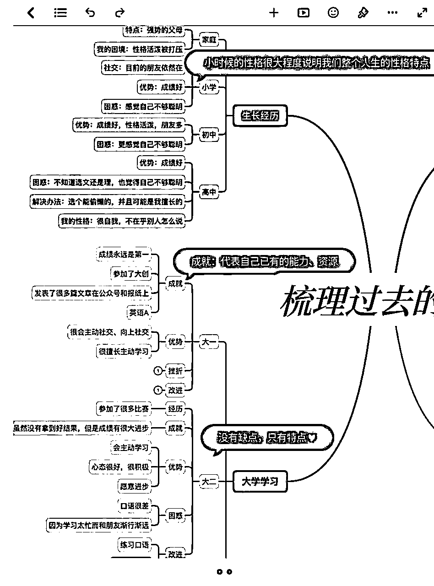

来源：https://xtwwuii5ub.feishu.cn/docx/WX87d3F4SoVZLHxDNGzcDDVRn6R
生财圈友好，我是新人漫漫，学习类自媒体博主~
首先简单介绍下小红书学习类账号成绩，从2021年5月到2022年1月，涨粉20万，
目前粉丝数为32万，一年广告变现40万。
今年2月开始做知识付费，两个月变现10万。
做小红书之前，一度认为自己是普通人，完全没想到自己能做到这个量级、能给那么多人提供有价值的内容。
所以接下来的内容，就是我站在一个普通人视角复盘的整个心路的复盘！
以这样的方式，可能更适合同样认为自己是“普通人”的你代入。
同时我会把重要、值得参考的点标红标黄加粗～
（PS：因为是完整的复盘，有些坎坷、走过的弯路也写上了，建议大家用电脑版阅读，可以根据目录导航跳转到提供解决方案的地方～）
1. 有一天突然发现流量值钱的意思。以前并不明白当博主的好处，直到发现可以接广告赚钱。（后来证明我依然很无知，因为广告赚钱算是比较“低级”的玩法）
2. 去实习，实习带我的leader全网有百万粉，原来百万博主就在我身边，现实生活中看起来也很普通（emmm）。原来普通人也能做大博主。
那时候我是觉得微博、知乎都已经人满为患了，但小红书还有很多人没玩，应该还可以分一杯羹。
事实证明，直到现在我明白了小红书的流量机制，才意识到，小红书的流量机制，什么时候入场都可以！
我15年就开始玩公众号。所以我很早就知道，写文章要吸睛，标题要夸张、要有反差、要和常识不符，内容要有话题度。
所以我一开始就知道，要做能吸引人观看的内容。
然后我就开始随便试，看发什么内容能火
结果，第一篇就火了：《雅思居然考了8分，但是依然出不了国》
仔细看这个标题：成就+心理落差
大家就喜欢这种有冲突的标题
我用脚趾头想都知道这种标题会火。
于是，我想趁着我有热度的时候赶紧继续发。
其实之前我并不知道小红书是什么流量机制，但我就是感觉应该是这样的：有热度了，平台会觉得你的内容好，就会推你其他的内容。人家喜欢你这篇笔记，肯定会点进你的主页看，然后看到你其他内容有价值，就会关注你，想看你继续发。
事实证明，我很聪明！！虽然我没有系统学习过，但我把这种感觉归于【网感】
但其实网感就是，因为我大量地刻意练习，我思考的速度太快过程太短暂以至于我都没意识到我有过思考。
所以现在在总结我自己做小红书的经验时，我一点一点去挖我是「为什么」这么做，比我做了什么更重要。然后我要一直保持这样的敏感、网感、习惯，一直不断输出爆款。
但是，之后就不如人意了，因为第一篇的内容只能发一次。
于是我想，随便发发其他的，也制造点发差。然后发了我日常生活的一些内容，标题也尽量很吸睛，比如我染头染红阴差阳错染了个七彩粉色很漂亮，也有人看，但不多。
我乱发，啥都发。
那个时候我还不知道，什么叫做，要做垂直内容
我突然记起我做之前告诉自己的，信息差。
然后我尝试把别的自媒体的内容，搬到我的主页。
因为我第一篇是雅思，那么我就去搜集很多做雅思的账号，看他们发的是什么，推荐了什么资料、什么网站、什么学习方法。然后直接照搬到了我的账号。
效果当然是非常好了。
而且大家都是用这些资料、网站，不存在抄袭不抄袭。
但是这也不是长久之计，总不可能老去找人家的东西。
效果还蛮好的
发雅思资料，引导大家关注我我就私发资料给对方。本意是吸粉。现在才知道当时这些资料可以直接卖！直接变现！
但是也无伤大雅，反正也是在摸索。
效果是一般般，但是也有。但这种模式是被官方🈲️的哦，所以不建议
原因：我的思维一直很局限，只局限在雅思。
其实也不完全是漫无目的地刷，我写的雅思和英语，我就去搜索【雅思】【英语】等内容。
搜到的内容的博主我都点进去看他们主页。
然后我发现，不仅仅只有垂直英语or雅思类博主，也有很多是分享自己学雅思的一段经历。
我突然发现，我们每个人都是相似的。
都是大学生，都可能是为了出国学雅思，都可能是为了考研而学习、比赛、得奖。
我悟了，原来我可以不做营销号，我可以做IP号！
那我一定要找一个，和我经历最相似，而且能起号最快、粉丝粘性也最好的博主。
于是我找到了：
以二本考研985内容火起来的软柠柠
以二本学校但是依然努力学习英语、考证、做副业，并且是农村生活的niki1998
分享自己学习感悟的未央erin
以上三个就是我最初的对标账号。
大量接触信息——寻找和自己相关的触动点——内化成自己的——融合创新
⚠️选题远远比内容更重要，这是我做小红书到现在，最重要的结论之一。
她们发过什么火了，我也发。
什么二本考研有多辛苦，我也发
在学校里独来独往，我也发
什么上二本学校，不过二流人生，我也发
其实只要看了眼标题，我不需要看内容就能写，因为我本人，也是这样的。
不一定经历要百分百相似，只要有相似经历，都可以借鉴。
我开始观察她们封面有什么特点：
如果是说自己努力，就发很多资料和学习记录、成就（奖学金、奖状），打普通人成就、反差感
考研，就可以发录取通知书。打权威性
说自己农村出身，就可以发农村背景+城市背景拼图，打反差感
总之就是传递一种：专业性、权威性、反差感、普通人也能做大事、有多努力、值得学习
让人感觉非常佩服（情绪价值）、感觉里面一定很有料，一定能学到东西（认知价值），而且看了就能学会，节约很多时间（时间价值）很想点进去。
我开始发除了雅思以外的学英语的内容，我个人是咋学英语的，英语学习方法、路径、等等。
我通过粉丝的反应意识到一点：比起完美的人，完整的、动态的、有生活气息、有生命力的人，更值得喜欢
因为自己分享的是学英语的过程，然后本身这和学习密不可分，自然就分享了大学甚至高中以及研究生的学习生活。
慢慢地，很多人也会问我大学是怎么学英语、怎么安排时间。
甚至很多人说，大学学习的时候室友会xx，怎么处理和室友的人际关系？
其实我内容的变化，是围绕着用户的需求。
我对用户的需求观察，来自于评论区和私信。
而且效果巨好！！！
没有私信和评论作为灵感时，我也开始站在用户视角，想，他们可能会需要什么样的内容。
因为我前两年才是大学生啊！！我当然知道大学生会有哪些困扰：学习不知道学什么、学习成绩不好、要不要竞赛、要不要参加社群、要不要选班干部、和同学关系不好/和老师关系不好、生活费不够等等
甚至生活费不够可以上升到和父母关系不好、原生家庭、心理健康问题等等。
这些内容，如果你现在想做，也完全可以做！！！
垂直于用户，而不是垂直于内容。解决用户需求。
根据评论和私信的提问做选题和内容真的写起来刷刷快
而且一篇接着一篇爆，私信和评论也不停地多，选题也停不下来，根本没办法不涨粉！
我还将自己过去的经历做成了思维导图，以此来看看有什么内容可以进行创作。

内容一直都可以有输出，每天都能发1-2篇。几乎篇篇都爆。
事实证明我是对的，
我也跟着那个博主发了好几篇我不被喜欢、不被看好、别人说我功利性、目的性，等等的文章
甚至比我单纯地发学习逆袭，涨粉更快。
一篇1万赞的笔记，涨了2万粉....我惊呆了。
所以，你不被人看好的“缺点”，可能是你的特质。比如“功利性”“目的性”“算计”“爱占便宜”“孤僻”“高敏感”“笨”，
其实都能引起大部分人的共情！
因为人，皆如此。
于是，我开始，刻意突出自己的“缺点”和“弱点”
涨粉，非常非常快。
我写过的：我的焦虑症、我的原生家庭、我的自卑等等
人性的共通点，更容易引起共情。
我的爆款选题库主要有以下几种：
对标博主（不仅仅是小红书）（不仅仅是最近几年）、新晋博主的爆款文章、热点、私信、评 论
以及随时看到信息就收集：书籍、短句
涨粉真的靠爆款，所以我涨粉特别特别快
我会结交一些博主，问问他们怎么报价。hhh因为每个赛道不一样，报价也会不一样～
也会参考品牌对我价格的评价和成单率
也会参考很多数据网站的后台价格
我开始揣摩粉丝和品牌的心理，明白了什么是品牌方喜欢的调性
把封面全部换成了统一/相似的颜色、风格
因为我也做过pr，我知道pr找合作账号，都是去搜竞品关键词。
所以，比如我想接平板广告，那我就多发自己使用平板的攻略。
如果我想接笔记软件广告，那我先自己发一个自己是如何写笔记的。
等等。
这样和粉丝粘性会更高，品牌也会更喜欢。
而且如果穿衣打扮好看，品牌也喜欢！
也就是，整个调性都变了。更加吸引粉丝和品牌对我投广告。
以上内容，就是我复盘快速涨粉的一些重要节点。
以下内容，是我过去小半年的新感受。可能没有那么暴力涨粉，但这半年是我更喜欢自己、更喜欢自己在做的事情的半年。
我也经历过很多次数据焦虑，直到后来涨粉到20多万，我突然想明白一点：做内心想做的内容。
如果目的是赚钱，那就必须接受有时候写的内容用户喜欢、自己反感，
但如果要做自己认可的内容，很可能需要放弃一部分用户和收入。
已经有了一定的粉丝，该赚的钱少不了了，如果我一直停留在写大众的、浅层的内容，不仅我自己得不到提升，我的用户也一直都会是和我一样原地踏步。
所以我开始把内容从「过去的经历」转到「现在的变化」
开始记录我当下每一天的学习、工作、思想、认知，想要持续不断地告诉大家，我在成长。
我想这就是IP的力量，不止之前的我那么优秀，我会一直不断努力下去，我的粉丝可以完全信任我，跟着我一起成长。
要记录、更新，所以我每天也要持续不断地学习、输入、输出。
2022年我光是微信读书就看了一百多个小时，还买了近百本纸质书。
每周坚持记录、复盘，保持一周3-5篇更新频率。
虽然涨粉开始慢起来，但每一篇都是我绝对赞同，每一篇都是当下真实的成长。
真实的自己，和小红书创作技巧不违背，我依然选择「具有反差的写作方式、不合常理的切入观点、略微夸张的情绪煽动词」等等
但是内容，这个东西很像一个介质，最终目的是筛选到了投契的朋友们，内容的数据不是目的，内容也不是目的，人才是目的。
真正的自己吸引的才是同频的人。
很幸运，我吸引到了数千个主动链接我的粉丝，他们愿意无条件相信我为我的知识付费，并且按照我的方法去学习和成长，
他们当中，有因为我考上了心仪的研究生院校、有去了想去的城市、有因为我坚持学英语的、有因为我而开始主动记录成长做成博主的。
我再也不数据焦虑了！！！！
我觉得这种回馈比我一个月多赚几千块钱让我感觉更爽！！！！
目前他们中的一部分已经成为了我自己的团队成员，我想他们未来会成为我人生中任何项目的合伙人！！！
用真实的成长带动他人真实的成长，做真实的自己吸引和自己价值观相符的人。然后一起，把价值放大、创造更多价值！
真的超级棒！！！！！！
之前都是做微商、做美妆、做海淘、普通人误打误撞进小红书这个领域
今年开始，越来越多的运营大佬、店铺才开始做小红书。
百度现在和小红书合作，专门开了一个「笔记」窗口，流量分给了小红书。
人人都能做小红书、应该做小红书
如果你觉得自己只是60分的人，依然可以去给50分的人提供价值。
你可以选一个细分领域，在这个领域做成70分的人，再去给50分的人提供价值！！
我在后来的很长一段时间都是逼自己去学编程、学写作，再传递方法。
以前我单一靠广告、知识付费变现。
加入生财让我更快破圈、知道了更多变现的方式，结合小红书一些平台规则，我也总结出了：利用平台推流期涨粉、卖号变现、引流玩法、矩阵玩法等变现玩法。
希望之后通过生财和更多大佬链接，深入学习每个新玩法～